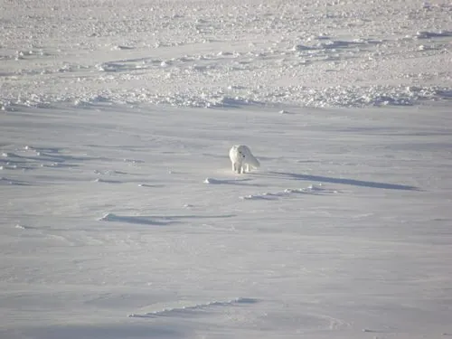

哺乳动物 · 动物界
北极狐 Vulpes lagopus

北极苔原上的小型狐类，冬季换上一身纯白厚毛，靠灵敏听觉在雪下定位旅鼠，能在极寒中活动自如。
- 分类
- 门脊索动物门纲哺乳纲目食肉目科犬科属狐属
- 栖息环境
- 北极苔原、海岸与冰缘地带，冬季可活动于浮冰上
- 地理分布
- 环北极地区，从格陵兰、冰岛到俄罗斯、加拿大和阿拉斯加
- 保护级别
- IUCN 无危（LC）
物种志
北极狐体长 0.46–0.68 米，尾长 0.26–0.42 米，体重 2–9 kg，雄性略大。它的毛色分白色型和蓝色型：白色型冬季通体雪白，夏季转为棕灰色；蓝色型全年呈灰蓝色。北极狐耳短而圆、吻部短，脚掌覆毛，尾巴粗大，可裹住身体保暖。
北极狐分布于北极苔原和浮冰区，从格陵兰、冰岛、斯瓦尔巴到俄罗斯、加拿大和阿拉斯加，栖息于苔原、海岸和冰缘地带。它主食旅鼠、田鼠，也捕食鸟类、鸟蛋、鱼类和腐肉，冬季会跟随北极熊捡食残骸。北极狐听觉灵敏，能听到雪层下旅鼠的活动，再跃起扑入雪中；它可在 -50℃ 的严寒中活动，冬季毛色与雪地融为一体。雌兽妊娠期约 51–57 天，每胎 5–10 仔。种群数量随旅鼠周期波动，总体稳定。
形态与习性
- 食性旅鼠、田鼠为主，也吃鸟类、鸟蛋、鱼类和腐肉
- 体长0.46–0.68 m，尾长 0.26–0.42 m
- 体重2–9 kg
- 寿命野外约 3–6 年
- 繁殖妊娠期约 51–57 天，每胎 5–10 仔
- 耐寒可在 -50℃ 环境中活动
- 毛色白色型冬季纯白，蓝色型全年灰蓝
趣味知识
- 北极狐有白色型和蓝色型两种毛色，冬季白狐与雪地几乎融为一体。
- 它能听到雪层下旅鼠的动静，再高高跃起扑入雪中捕食。
- 北极狐的脚掌覆有厚毛，在冰面和雪地上行走防滑保暖。
- 冬季它会跟随北极熊，捡食其吃剩的猎物残骸。